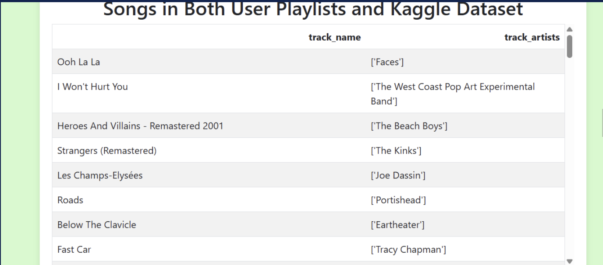

from eda import plot_correlation_heatmap
from music_rec import get_spotify_df
spotify_df = get_spotify_df()
plot_correlation_heatmap(spotify_df)Link to GitHub Repository
The GitHub repository for our project can be found here: https://github.com/avajts/pic16b_project.git
Overview
The Spotify Collaborative Playlist Generator is a Flask-based web application designed to enhance the music discovery experience. By integrating with the Spotify API, the app retrieves a user’s playlists and tracks and leverages a K-Nearest Neighbors (KNN) machine learning model to recommend new songs. These recommendations are generated using a dataset of Spotify tracks from Kaggle, allowing users to explore music selections tailored to their preferences. In addition to personalized recommendations, the app provides interactive data visualizations to offer insights into listening habits and genre trends.
One of the standout features of this app is its collaborative functionality, allowing multiple users to log in simultaneously. The recommended playlist is based on the combined preferences of all logged-in users, ensuring a balanced mix of music that aligns with the group’s shared tastes. Users can easily set up the app by cloning the repository, installing Flask, and running the application in their terminal. Once authenticated with Spotify, they can generate custom playlists by selecting a genre and specifying the number of songs they’d like to add. Behind the scenes, the app efficiently manages user data using an SQLite database while employing data preprocessing and feature engineering to optimize the recommendation system. This project not only demonstrates how machine learning can enhance music discovery but also showcases practical applications of web development, API integration, and data analysis.
To build an effective recommendation system, we first analyzed the relationships between various song features, such as energy, danceability, and acousticness. The correlation matrix heatmap visually represents how different track features are related to each other, helping us identify patterns in the dataset that may influence song recommendations. The more positive a correlation is, the more strongly correlated the two features are, which implies we should use features like: * energy and loudness * valence and danceability * speechiness and explicit
By leveraging this insight, our KNN model can make more informed recommendations, ensuring that suggested songs align well with the user’s listening habits.
Technical Component 1: Dynamic Website
The Flask web app allows multiple users to log in with their Spotify accounts and see the names and artists of the songs in their Spotify playlists that are also in the Kaggle dataset. These are the songs that their recommended playlist will be based on, since they are the ones we have the song features for. From the /playlists page, users can then choose to log in with another Spotify account, see their recommended playlist, or see data visualizations on how each user’s song choices compare. If they choose to see visualizations, they can view a two-variable scatterplot or a genre histogram. To see their recommended playlist, they will be prompted to enter the genre and number of songs they want, and will then be shown a generated playlist meeting those specifications.
Behind the scenes, this is how the web app works: when a user logs in with their Spotify account and grants the app permission to access their data, the app sends a request Spotify through the Spotify API to access it. Their song information is then stored (temporarily) in a SQL database. Each page of the app has a function that tells it what to do, like calling another function, displaying a table, and/or rendering an HTML file. For example, the /display-recommended page has a function display_recommended() that gets a Pandas DataFrame of user songs from a function that gets the table of user songs from the SQL database, prepares it, and returns it as a dataframe. It gets a dataframe of Spotify tracks from the Kaggle dataset similarly. Then it takes in the genre and n (number of songs) input from the form the user filled out, and passes those as parameters to the function recommend_songs(), which uses the KNN model to generate the recommended playlist that it returns. display_recommended() returns rendered HTML files to display the input form and the table of recommended songs.
@app.route('/display-recommended', methods=['GET', 'POST'])
def display_recommended():
user_df = get_user_df()
df_spotify_tracks = get_spotify_df()
if request.method == 'POST':
genre = request.form.get('genre', None)
n = request.form.get('n', '5')
try:
n = int(n) # Convert to integer
except ValueError:
return "Error: n must be an integer.", 400 # Handle invalid numbers
if n <= 0:
return "Error: n must be a positive integer.", 400
# Generate the recommended playlist
recommended = recommend_songs(user_df, df_spotify_tracks, genre=genre, n=n)
# Convert DataFrame to HTML
recommended_html = recommended.to_html(classes='table table-striped', index=False)
return render_template('display_recommended.html', table=recommended_html)
return render_template('input_form.html') Here is an example of what the /display-recommended page looks like showing a recommended playlist of 20 songs in the “pop” genre (only some are showing in the screenshot but in the app the user can scroll to see the rest of the songs):
Technical Component 2: Creating and Interacting with an SQL Database
Since there is so much data involved in our app, we created an SQL database called spotify_dataset.db. First, we loaded the Kaggle dataset into this database under its own table called spotify_tracks. Then, when the app is run and the user logs in, their data is automatically loaded into the database in different tables called user_tracks and user_playlists, which contain the information from the Spotify API call (the Spotify API actually yields the data in the format of a json object, which we then load into a dataframe, which we then write into the database). Instead of creating a different table for each user, we opted to have one combined table for all the users and an extra username column which specifies which user that row corresponds to.
After the user logs into our website, they are shown a table which displays the songs that overlap between their personal Spotify and our Kaggle dataset – we wanted the user to be able to see which of their songs we are using to generate our recommendations and visualizations. Because the API call yields the data as a json object, the information about the artists is stored in the database as one long string of the form:
{
"external_urls": {
"spotify": "string"
},
"followers": {
"href": "string",
"total": 0
},
"genres": ["Prog rock", "Grunge"],
"href": "string",
"id": "string",
"images": [
{
"url": "https://i.scdn.co/image/ab67616d00001e02ff9ca10b55ce82ae553c8228",
"height": 300,
"width": 300
}
],
"name": "string",
"popularity": 0,
"type": "artist",
"uri": "string"
}In order to display the songs and artists in a nice fashion, we extracted the artists’ names using the command:
display['track_artists'] = (display['track_artists'].str.findall(r'\bname": "([^"]*)')).apply(lambda x: str(x))Here is an example of what this display table might look like (of course, your songs would be your own!):

We also query the database in many other functions to obtain whatever specific data is needed.
Finally, we created the function clear_database() to ensure that each new time the app starts, the database is emptied so that the users only have their data being used.
Technical Component 3: Interactive Data Visualization
After logging into the website, users also have the option to view combined data. Clicking on this button will then prompt them to choose which type of data visualization they would like to see. As of now, there are two options: a two-variable scatterplot or a genre histogram.
If the user chooses two-variable scatterplot, they will be taken to the page /two-var-plot, which renders an html file. This will display the plot itself (the default is loudness vs. energy) and the option to customize the chart by changing which variables it plots. The plot is created by querying the SQL database and loading the data into a dataframe, then using plotly to make the scatterplot. If the user changes the variables by entering the variables they want and clicking the Submit button, the page automatically reloads and the chart is updated accordingly.
If the user chooses genre histogram, they will be taken to a page displaying a histogram of the genres they listen to. If there is more than one user logged in, it will create side-by-side charts, one for each user. The code for this page works in the same way: it queries the SQL database, makes a dataframe, and then uses plotly to create the chart out of that dataframe.
@app.route('/display-data/two-var-plot', methods=['GET', 'POST'])
def display_two_var():
user_df = get_user_df()
if request.method == 'POST':
features = [request.form.get('feature0', 'loudness'), request.form.get('feature1', 'energy')]
session['features'] = features # Store in session
return redirect(url_for('display_two_var')) # Redirect after POST
features = session.get('features', ['loudness', 'energy']) # Load stored features
fig = two_var_plot(user_df, features)
graph_json = json.dumps(fig, cls=utils.PlotlyJSONEncoder)
return render_template('two_var_plot.html', graph_json=graph_json)Here is an example of the two-variable scatterplot (on the app, it would be interactive, with the colors corresponding to different users).

Technical Component 4: Machine Learning Model’s Performance
The K-Nearest Neighbors (KNN)-based recommendation system demonstrates a strong ability to suggest songs that align with user preferences when trained on genre-specific subsets rather than the entire dataset. By first filtering the Spotify dataset by genre and then applying KNN to find the most similar tracks based on audio features such as danceability, energy, and valence, the model ensures that recommendations align with the user’s listening patterns. This genre-specific approach helps reduce the risk of recommendations being skewed toward dominant characteristics in the full dataset, which was observed when training the model without genre constraints. However, one limitation lies in the dataset itself—genres in the Spotify dataset may not always be correctly labeled or well-represented, leading to recommendations that may not fully capture a user’s actual taste. Additionally, certain genres, particularly newer ones like indie and pop, have fewer data points available, which reduces the model’s ability to generate high-quality recommendations due to a lack of sufficient training examples.
Another important consideration is the model’s reliance on randomly selecting songs from the top recommendations. While randomness introduces diversity, it also increases the chance of selecting less relevant songs instead of the best possible matches. Furthermore, KNN’s performance heavily depends on the choice of distance metric (Euclidean distance in this case), which may not always capture musical similarity in an optimal way. A stronger approach might involve integrating cosine similarity or a hybrid recommendation system that combines content-based filtering with collaborative filtering. Lastly, the filtering mechanism ensures users are not recommended tracks they already have in their playlists, which enhances suggesting unfamiliar songs. Future improvements could involve refining the dataset, experimenting with feature weighting, or incorporating deep learning models for more specific recommendations.
def recommend_songs(user_songs, spotify_tracks, genre=None, n=5, random_state=42):
"""
Generate a personalized playlist of `n` songs from a specific genre based on the user's preferences.
Args:
df: The user's listening history with audio features.
genre: The genre of songs to recommend.
n: The number of songs to recommend (default is 5).
random_state: Seed for reproducibility (default is 42).
Returns:
random_recommendations: A DataFrame containing the recommended songs.
"""
# Filter the Spotify dataset to include only songs from the specified genre
genre_tracks = spotify_tracks[spotify_tracks['track_genre'].str.lower() == genre.lower()]
# Check if there are enough songs in the specified genre
if len(genre_tracks) < n:
raise ValueError(f"Not enough songs in the '{genre}' genre. Only {len(genre_tracks)} songs available.")
# Select relevant features for the KNN model
features = ['danceability', 'energy', 'key', 'loudness', 'mode', 'speechiness',
'acousticness', 'instrumentalness', 'liveness', 'valence', 'tempo']
# Prepare the feature matrix for the user's listening history
X_user = user_songs[features]
# Train the KNN model on the user's data
# Standardize the features
scaler = StandardScaler()
X_user_scaled = scaler.fit_transform(X_user)
# Ensure `n` does not exceed the number of available songs in the dataset
n = min(n, len(X_user_scaled))
# Train the KNN model on the user's features
knn = NearestNeighbors(n_neighbors=n, metric='euclidean') # Use Euclidean distance
knn.fit(X_user_scaled)
# Prepare the feature matrix for the genre-specific songs
X_genre = genre_tracks[features]
X_genre_scaled = scaler.transform(X_genre)
# Find the nearest neighbors (most similar songs) in the genre-specific dataset
distances, indices = knn.kneighbors(X_genre_scaled)
# Flatten the indices array to get a list of all recommended song indices
recommended_song_indices = indices.flatten()
# Ensure indices are within the valid range of the genre_tracks DataFrame
valid_indices = [idx for idx in recommended_song_indices if idx < len(genre_tracks)]
if not valid_indices:
raise ValueError("No valid recommendations found. Please check the input data.")
# Get the recommended songs
recommended_songs = genre_tracks.iloc[valid_indices].drop_duplicates(subset=['track_name', 'artists']).head(n)
# Randomly select `n` songs from the recommendations
random_recommendations = recommended_songs.sample(n=n, random_state=random_state)
random_recommendations = random_recommendations[['artists', 'track_name', 'track_genre']]
# Display the recommended songs
return random_recommendationsThe genre count visualization highlights the distribution of different music genres in our dataset, which directly impacts the performance of our KNN recommendation model. Since some genres are significantly underrepresented, the model may struggle to provide accurate recommendations for those genres due to limited data. This imbalance reinforces the need for careful dataset preprocessing and genre-specific training to ensure diverse and relevant song suggestions.
from eda import plot_genre_count
plot_genre_count(spotify_df)Concluding Remarks
Some ideas we have for future improvements include: * Enhancing dataset quality for better genre classification– as discussed in Techincal Component 3, there are certain limitations to the dataset we used. * Improving recommendation accuracy with deep learning models.
We hope this project will only contribute to users’ enjoyment of music. We do not see any ethical concerns, as we do not have access to users’ personal data in their Spotify accounts and no information is saved. Only their playlist information is stored in the SQL database for the duration of that instance of the app running, and the database is cleared each time the app runs.